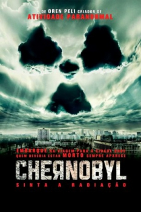

Chernobyl: Sinta a Radiação (2012)


Passagem proibida.

Avaliação (TMDb):


5.2/10 (1.2K votos)
Avaliação (Usuário):
Outro Título:Chernobyl Diaries
País:United States, 88 minutos
Idiomas falados:Inglês, Português
Gênero(s):Terror, Suspense
Diretor(s):Bradley Parker
Codec:MPEG-2 (DVD)
Número: 918
Sinopse:
Seis turistas contratam um guia de turismo extremo para levá-los a cidade fantasma de Pripyat, que abrigava os trabalhadores de Chernobyl. Mas durante o passeio eles percebem que não estão sozinhos no local.
Elenco:
Jesse McCartney, Devin Kelley, Jonathan Sadowski, Olivia Taylor Dudley, Ingrid Bolsø Berdal, Nathan Phillips, Alex Feldman, Milutin Milošević, Kristof Konrad, Pasha D. Lychnikoff
Tipo de mídia: DVD5,
Legendas: Inglês, Português
Alugado: Não
Tela: 1.85:1